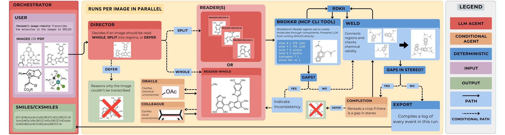
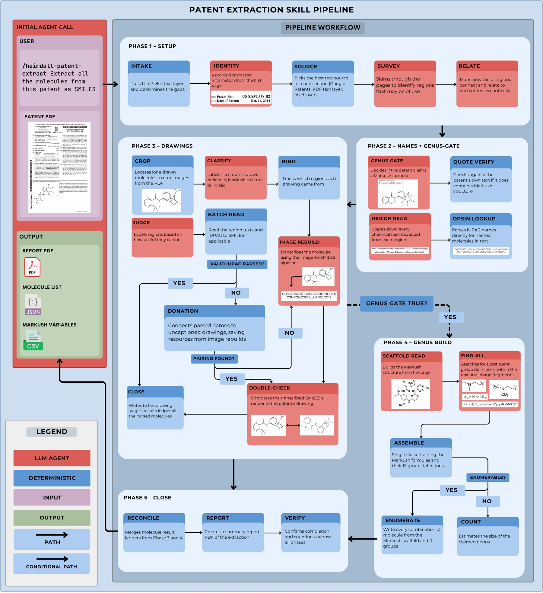
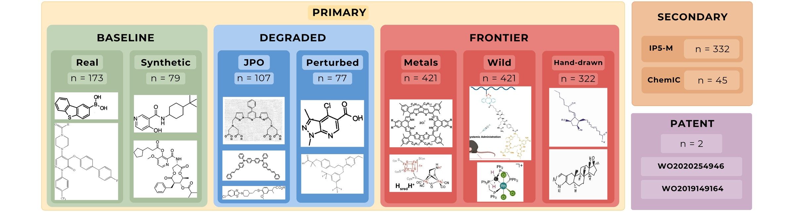

Work / Heimdall: An Agentic Eye for Chemistry
Heimdall: An Agentic Eye for Chemistry
- Co-first author
- Accepted to the NeurIPS 2026 ML4Molecules workshop
Skills Agentic systems, Tool-using agents, Agent skills, MCP, Claude Code, Codex, Python, RDKit, FastAPI, TypeScript, Next.js, Docker
Chemistry papers and patents show molecules as drawings. Before a chemist can search them, compare them or run them through other software, someone has to turn each drawing back into a structure a computer can read, usually a SMILES string. Doing that by hand is slow, and the tools that try to do it automatically struggle with the drawings that actually show up in documents.

How it works
Heimdall splits the job between language models and ordinary code. A director agent looks at each image and decides whether to read it whole, split it into regions, or set it aside. Reader agents describe what they see piece by piece through a command-line tool, instead of writing SMILES themselves. A deterministic RDKit back end assembles those pieces, joins the regions back together and checks that the result is a valid molecule. When something doesn't add up, separate agents are asked about chemical or visual uncertainty, and a final pass rereads any gaps in stereochemistry.
The point of that split is that the language model never produces the final answer on its own. Every structure that comes out has been built and checked by RDKit.

Patents need more than reading single drawings. A separate pipeline works through a whole patent PDF: it finds the regions worth reading, reads chemical names and drawings, checks whether the patent claims a generic Markush structure, and if it does, builds the scaffold and its R-group definitions. It uses the image-to-SMILES pipeline for every drawing it finds.

Benchmark
We tested Heimdall on a benchmark split into three tiers: clean baseline images, degraded ones, and frontier cases like metal complexes, images from the wild and hand-drawn structures, plus secondary sets and two full patents.

What else I built around it
- An agent role system. One central config sets each role's model, effort level and tool permissions, and compiles them into the native agent files for Claude Code, Codex, Cursor, Zed and OpenCode.
- A server-side runtime in a FastAPI back end that runs Heimdall's skills and MCP tools on each user's own API key, and routes requests between local and cloud models.
- A document interface in Next.js and TypeScript where chemists cut molecule drawings out of PDFs and images, send them through Heimdall, then review and export the results.
- Docker images for the FastAPI and PostgreSQL back end, with the PyTorch vision model moved into its own service to keep the API image small.
What I'm working on now
A molecule sketcher that runs in the browser, written in TypeScript with RDKit compiled to WebAssembly. It turns raw pen strokes into bonds, rings, stereo wedges and handwritten element labels, and shows the SMILES live as you draw.